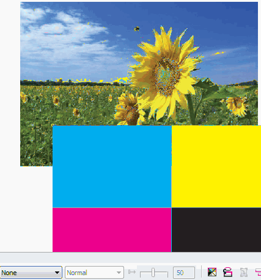

Изготавление многоцветного трафарета, помогите
artclon / 03.06.2010, 23:43/00:41
Форум:
Добрый день!
Хочу сделать многоцветрый трафарет. Но не могу решить первую задачу - автоматически уменьшить количество цветов в рисунке. Хочу изготовить 4-ех цветный трафарет из полноцветной фотографии. (т.е. преобразовать n-ое количество цветов в 4 цвета). Помогите...
shark, я видел кто начал тему. Однако все прекрасно поняли кто является фактическим топикстартером и собственно о ком речь. Могу грохнуть первые посты, если уж так эта "непонятность" тебя тревожит и мозолит глаза.
Sancho, нисколько не сомневаюсь в вашей админской возможности грохать любые посты, которые на ваш взгляд тревожат и мозолят глаза другим пользователям сайта. Кстати, мы не знакомы и на брудершафт не пили, поэтому было бы не плохо обращаться на "вы", как общаются друг с другом все участники этой темы.
shark, ммм мы вдруг важности набрались что на Вы теперь нужно? :D Что то раньше в переписки этого не наблюдалось и на "ты" тебя ни коем образом не задевало ))) Я думаю не стоит продолжать накалять обстановку.
согласен, проехали :)
Так как в этой теме затронули функцию Duotone, вопросик: мне не дает возможности использовать не пантонные цвета. Как то у Sancho это получилось. Что я не так делаю?
Добавлено (18.02.2011, 16:54)
---------------------------------------------
все, вопрос отпал)))) ;) я поняла, если используешь не "чистые" (смешанные) цвета, то он меняет его на ближайший пантон?
8601610, какая версия Корела?
X4. Скажите, в Кореле можно растр перевести в два цвета, как на картинке указано?
Добавлено (18.02.2011, 18:47)
---------------------------------------------
я как "нужно" делала в Ps.
Вспомнил я тут одну "военную" хитрость )))
С помощью неё можно смотреть сепарации прямо в документе, а так же извлекать нужные каналы.

Эффекты должны при этом должны отображаться как СМИК, а не РГБ.
В Х5 для этого нужно включить симуляцию оверпринта (наложений).
Sancho, а как это относится к моей проблеме?! O_O
8601610, сообщение #39 к тебе не относится. А по поводу СМИК цветов в дуотоне... сейчас под рукой нет Х4 что бы проверить. В Х5 это работает. Предварительный вывод — СМИК цвета в дуотоне можно использовать только в Х5.
Страницы